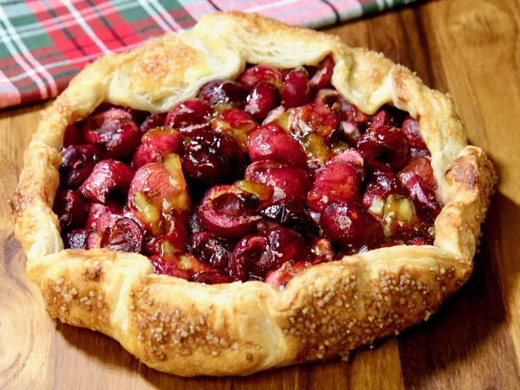

Puff Pastry Cherry Crostata

Source: allrecipes Puff Pastry Cherry Crostata by Pat Bernitt
Description
This cherry crostata, or galette, is free-form and rustic with all the flavors of cherry pie but with a flaky, buttery, puff pastry crust.
Ingredients
- 1/2 (17.3 ounce) package frozen puff pastry sheets, thawed
- 1 pound cherries, pitted and halved
- 2 tablespoons brown sugar
- 1 tablespoon cornstarch
- 1/2 teaspoon ground cinnamon
- 1/2 teaspoon almond extract
- 1/4 teaspoon salt
- 1 large egg, beaten
- 1 tablespoon water
- 1 tablespoon turbinado sugar, or to taste
- 1 tablespoon orange marmalade (optional)
Steps
- Preheat the oven to 400 degrees F (200 degrees C). Line a baking sheet with parchment paper.
- On a lightly floured surface, roll a well-chilled puff pastry sheet into an approximate 11 to 12-inch round. Trim edges into a circle shape, and transfer to the lined baking sheet.
- Stir cherries, brown sugar, cornstarch, cinnamon, almond extract, and salt together in a bowl until cherries are well coated. Spoon cherry mixture into the center of the pastry, leaving a 2-inch border. Lift up edges of the crust, and fold around, overlapping the cherry mixture.
- Whisk egg and water into an egg wash, brush edges of the pastry, and sprinkle with turbinado.
- Bake in the preheated oven until cherries are tender and crust is golden brown, 23 to 30 minutes. Warm marmalade in the microwave until melted, 15 to 20 seconds, and drizzle over the cherries to glaze.
- Allow to cool for about 15 minutes before cutting into wedges to serve.